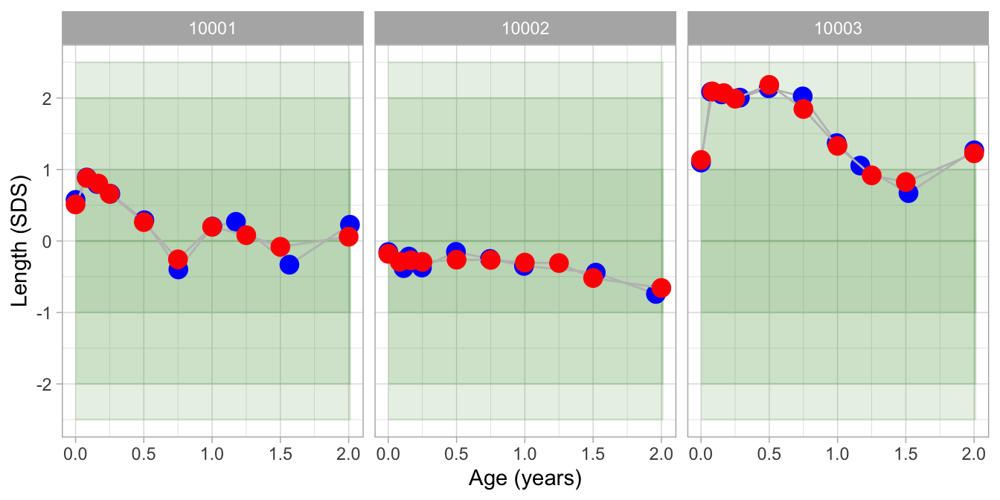
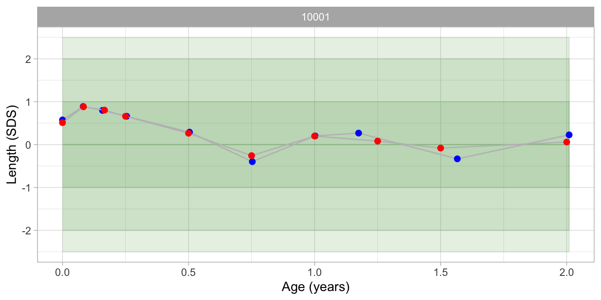
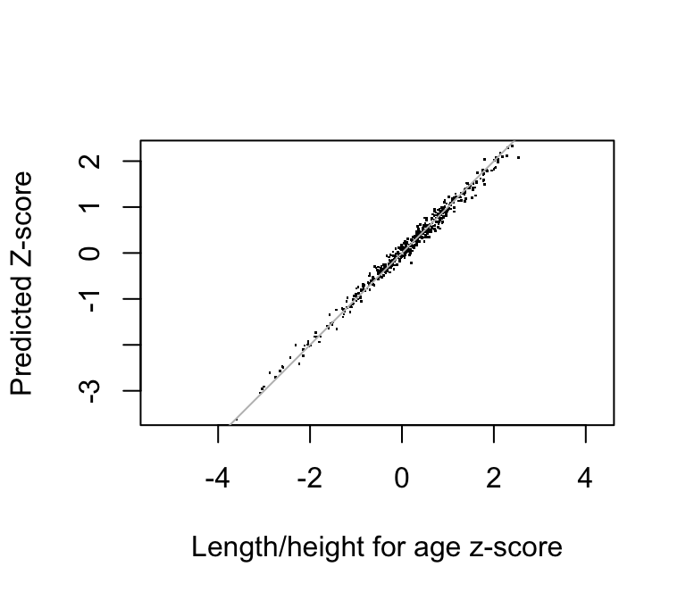

prediction.RmdThis vignette shows a step-by-step introduction of how to - Fit the broken stick model to data; - Predict observations by the fitted model.
This vignette assumes the rbokeh, hbgd and brokenstick packages are installed. See getting started with brokenstick for the installation procedure. We will use the smocc_50 demo data that is built-in into the brokenstick package.
require("brokenstick")
## Loading required package: brokenstick## Registered S3 method overwritten by 'pryr':
## method from
## print.bytes Rcpprequire("hbgd")
## Loading required package: hbgdrequire("rbokeh")
## Loading required package: rbokehsmc <- smocc_50
The broken stick model can fit observations in either the raw scale (cm, kg, and so on) or as a standard deviation score (SDS), or \(Z\)-score. The results from the analysis of the \(Z\)-score will often be better for two reasons: 1) for growth curves, a straight line assumption is more plausible in the \(Z\)-score scale, and 2) the assumption of normality is more plausible in the \(Z\)-score scale. It is easy to convert the measurements into the \(Z\)-score scale, fit the model, and convert back to the raw scale afterwards, if desired. The hbgd package contains several functions to convert back and forth between both scales. For example,
haz <- who_htcm2zscore(smc$agedays, smc$htcm, smc$sex)
The main outcome measure will be haz, the age and sex-adjusted \(Z\)-score relative to the WHO growth standard. The inverse calculation can be done as
htcm <- who_zscore2htcm(smc$agedays, haz, smc$sex)
Note that slight differences between smc$htcm and htcm may occur because of rounding, but the deviations are small and irrelevant.
The mean \(Z\)-score is around 0.3, indicating that Dutch children under two years are taller than the WHO height standard.
The age range is 0-2 years. The scatterplot of height SDS by age clearly shows the pattern in the visits.
figure(xlab = "Age (years)", ylab = get_label("haz")) %>% ly_zband(x = seq(0, 2.5, 0.5), z = -c(2.5,2,1,0)) %>% ly_points(smc$age, smc$haz, hover = c(smc$age, smc$htcm), size = 4)
Note that the data contain some outliers. Child 10069 was born after a gestational age of 34 weeks and has several extremely low SDS values. Child 10075 had an observation at the age of 2.67 years.
The plot of the number of visits per child reveals that most children had 10 visits. It appears that children with fewer than six visits were removed from the data. Two children had more than 10 visits.
plot_visit_distn(smc, width = 350, height = 350)
The missing data plot shows that number of missing values in the time varying variables was very low.
plot_missing(smc, width = 600, height = 400)
The SMOCC study had 10 scheduled visits: at birth, and at ages of 1, 2, 3, 6, 9, 12, 15, 18 and 24 months. Here, we place the knots at the scheduled ages. Depending on the scientific question at hand, we could place knots at other locations. See the vignette on knot placement for more details.
The brokenstick function performs the actual model fitting.
fit <- brokenstick(y = smc$hgt.z, x = smc$age, subjid = smc$subjid, knots = knots, boundary = boundary)
## Warning: number of observations (=484) <= number of random effects (=550) for
## term (0 + x1 + x2 + x3 + x4 + x5 + x6 + x7 + x8 + x9 + x10 + x11 | subjid); the
## random-effects parameters and the residual variance (or scale parameter) are
## probably unidentifiable## boundary (singular) fit: see ?isSingularIt frequently happens that the fitting algorithm issues warnings about the number of random effect (too high), or reports that one of the random effects is deleted before fitting. This may or nay not affect the quality of the predictions. At the least, the user should check the fitted object for plausibility. The current version uses the general purpose methods from the lme4 package. Future versions of the brokenstick package may feature dedicated and stabler fitting methods that takes advantage of the special structure of the brokenstick model.
class(fit)
## [1] "brokenstick"The fitted object fit is of S4 class brokenstick, and extends class lmerMod with additional attributes knots, boundary and degree. The brokenstick() function only supports degree = 1, the straight line model.
Let us first extract the fixed effects and the corresponding knot locations.
## x1 x2 x3 x4 x5 x6 x7 x8 x9 x10 x11
## -0.08 0.40 0.31 0.35 0.23 0.00 0.04 0.11 0.02 0.13 -0.32## [1] 0.00 0.08 0.17 0.25 0.50 0.75 1.00 1.25 1.50 2.00 3.00The fixed effects correspond to the mean of sample of children in the data. The mean development over all 206 children may be plotted as:
figure(xlab = "Age (years)", ylab = get_label("haz"), title = "Mean trajectory (n = 206)") %>% ly_zband(x = seq(0, 2.5, 0.5), z = -c(2.5,2,1,0)) %>% ly_points(get_knots(fit), lme4::fixef(fit), hover = c(get_knots(fit), lme4::fixef(fit))) %>% ly_lines(get_knots(fit), lme4::fixef(fit))
At birth, the 206 children are on average 0.64 SD taller than the WHO standard, but at the ages of month 1-3, the mean rapidly falls near or below the mean of the WHO standard. After that, there is a the trajectory consistently is above the mean, with values around 0.3-0.6 SDS. The fact that these are positive is not surprising as the Dutch are known to be among the tallest populations in the world. Thus, at the age of 2 years, the Dutch are about 0.5-0.6 SD taller than the WHO standard. The estimate for x11 (0.56), corresponding to the age of 3 years is just there for technical reasons. The estimate is based on extreme extrapolation beyond the data. The last knot of the broken stick model has no interpretation, and should be disregarded.
fit## Linear mixed model fit by REML ['brokenstick']
## Formula: y ~ 0 + x1 + x2 + x3 + x4 + x5 + x6 + x7 + x8 + x9 + x10 + x11 +
## (0 + x1 + x2 + x3 + x4 + x5 + x6 + x7 + x8 + x9 + x10 + x11 |
## subjid)
## Data: data
## REML criterion at convergence: 670.3359
## Random effects:
## Groups Name Std.Dev. Corr
## subjid x1 1.1850
## x2 0.9895 0.78
## x3 1.1521 0.72 0.89
## x4 0.9496 0.70 0.90 0.89
## x5 0.9370 0.49 0.79 0.84 0.83
## x6 0.9154 0.52 0.74 0.75 0.75 0.95
## x7 0.8857 0.44 0.64 0.61 0.54 0.83 0.87
## x8 0.9634 0.31 0.60 0.55 0.50 0.71 0.78 0.86
## x9 0.9730 0.34 0.62 0.60 0.55 0.76 0.81 0.87 0.94
## x10 1.0906 0.12 0.52 0.57 0.50 0.79 0.76 0.82 0.81 0.92
## x11 6.6152 0.09 -0.16 -0.30 -0.20 -0.52 -0.36 -0.37 0.00 -0.14
## Residual 0.1896
##
##
##
##
##
##
##
##
##
##
##
## -0.46
##
## Number of obs: 484, groups: subjid, 50
## Fixed Effects:
## x1 x2 x3 x4 x5 x6 x7
## -0.082754 0.398328 0.311553 0.350124 0.228374 -0.001771 0.039742
## x8 x9 x10 x11
## 0.113818 0.017845 0.127694 -0.320592
## convergence code 0; 0 optimizer warnings; 1 lme4 warningsThe column labeled Std.Dev. contains the standard deviations of the random effects. These numbers are expected to be around 1, since - under the assumption that the WHO standard appropriately describes this sample - the dependent variable follow a standard normal distribution with zero mean and standard deviation equal to one. The Corr component of the random effects lists the correlations between the broken stick estimates at different ages. The correlation matrix shows a typically pattern where the highest elements are close to the diagonal, and where off-diagonal elements decrease. The standard deviation of the residuals (within-person error) for this model is of 0.26, so on average, the discrepancy between observed and fitted trajectories is about one quarter of a standard deviation. At the age of 2 years, the standard deviation in height is about 32 mm, so on average the difference between the model and the observed data is about 8 mm, about twice the size of the technical error of measurement of a carefully conducted height measurement.
The predict() function obtains predictions from the broken stick model. The function is extremely flexible, and allows for prediction of new subjects at arbitrary ages in a variety of output formats. The simplest call
## subjid x y yhat knot
## 1 10001 0.0000 0.575 0.5117682 FALSE
## 2 10001 0.0821 0.888 0.8762757 FALSE
## 3 10001 0.1588 0.797 0.8107744 FALSE
## 4 10001 0.2546 0.661 0.6530335 FALSEproduces the predicted value (in yhat) for each measured data point for all children used to fit the model in the long output format. The observed \(Z\)-score is stored in column called y, and the corresponding broken stick estimates are stored in the column called yhat. The column knot is set to FALSE if y is actually observed.
The predicted values represent a compromise between the person’s data values and the global mean. In general, the fewer and less extreme data points of a person are, the closer the compromise will be toward the global mean. The compromise is called the conditional mean of the posterior distribution. In the broken stick model, it is simply calculated as the sum of the fixed and random effects.
We can obtain the locations at which the lines connect by specifying the at = "knots" argument, e.g.
## subjid x y yhat knot
## 1 10001 0.0000 NA 0.5117682 TRUE
## 2 10001 0.0833 NA 0.8816035 TRUE
## 3 10001 0.1667 NA 0.8033631 TRUE
## 4 10001 0.2500 NA 0.6603196 TRUENote that the column knot is now TRUE. We may obtain both types of estimates simultaneously for all children by using the
## subjid x y yhat knot
## 1 10001 0.0000 0.575 0.5117682 FALSE
## 2 10001 0.0821 0.888 0.8762757 FALSE
## 3 10001 0.1588 0.797 0.8107744 FALSE
## 4 10001 0.2546 0.661 0.6530335 FALSEThe first three fitted trajectories are plotted by

The computationally fastest way to obtain predicted values for just one subject from a fitted model is to specify the ids, at and output arguments as
p1 <- predict(fit, ids = 10001, at = "knots", output = "vector")
The predict() function can return additional information by altering these arguments. Type ?predict.brokenstick at the console to see the documentation.
We plot the original data and the broken stick estimates for child 10001 jointly as

Modeling was done in the \(Z\)-score scale for the reasons given above. We may plot the result in the original scale by back-converting the estimates using the WHO reference, as follows:
# convert Z-score to CM p <- predict(fit, ids = 10001, at = "both") p$ycm <- round(who_zscore2htcm(years2days(p$x), p$y, sex = "Female"), 1) p$yhatcm <- who_zscore2htcm(years2days(p$x), p$yhat, sex = "Female") head(p)
## subjid x y yhat knot ycm yhatcm
## 10001.1 10001 0.0000 0.575 0.5117682 FALSE 50.2 50.10097
## 10001.2 10001 0.0821 0.888 0.8762757 FALSE 55.4 55.34210
## 10001.3 10001 0.1588 0.797 0.8107744 FALSE 58.4 58.42549
## 10001.4 10001 0.2546 0.661 0.6530335 FALSE 61.3 61.31615
## 10001.5 10001 0.5038 0.290 0.2564071 FALSE 66.5 66.38629
## 10001.6 10001 0.7529 -0.398 -0.2521086 FALSE 69.2 69.58151The corresponding figure in the cm scale can be produced as
p <- p[p$x <= 2.5,] figure(xlab = "Age (years)", ylab = get_label("htcm")) %>% ly_who(x = seq(0, 750, by = 30), y_var = "htcm", x_trans = days2years, sex = "Female", color = "green", p = 100 * pnorm(-c(2.5,2,1,0))) %>% ly_points(p$x, p$ycm) %>% ly_lines(p$x[p$knot], p$yhatcm[p$knot], col = "orangered") %>% ly_points(p$x[p$knot], p$yhatcm[p$knot], col = "orangered", size = 6)
A brokenstick model like in fit can be stored by save() for future use in R. However, this is a fairly large object that contains a lot of superfluous information. As a matter of fact, if we know the x and y variables of a given person, prediction using the broken stick model requires only the knot locations, the fixed effect estimates, the variance/covariance matrix of the random effects, and the size of the residual variance. The export() function will collect this information from the fitted model, and store it as a list.
# export the broken stick models exp <- export(fit) attributes(exp)
## $names
## [1] "beta" "omega" "sigma2" "knots" "boundary" "degree"
##
## $class
## [1] "brokenstick_export"lapply(exp, round, 2)
## $beta
## x1 x2 x3 x4 x5 x6 x7 x8 x9 x10 x11
## -0.08 0.40 0.31 0.35 0.23 0.00 0.04 0.11 0.02 0.13 -0.32
##
## $omega
## x1 x2 x3 x4 x5 x6 x7 x8 x9 x10 x11
## x1 1.40 0.91 0.99 0.79 0.54 0.56 0.46 0.35 0.39 0.16 0.73
## x2 0.91 0.98 1.01 0.84 0.73 0.67 0.56 0.57 0.60 0.56 -1.07
## x3 0.99 1.01 1.33 0.97 0.91 0.79 0.62 0.61 0.68 0.71 -2.28
## x4 0.79 0.84 0.97 0.90 0.74 0.65 0.45 0.46 0.51 0.52 -1.27
## x5 0.54 0.73 0.91 0.74 0.88 0.82 0.69 0.64 0.69 0.81 -3.25
## x6 0.56 0.67 0.79 0.65 0.82 0.84 0.70 0.69 0.72 0.76 -2.20
## x7 0.46 0.56 0.62 0.45 0.69 0.70 0.78 0.74 0.75 0.79 -2.17
## x8 0.35 0.57 0.61 0.46 0.64 0.69 0.74 0.93 0.88 0.85 -0.02
## x9 0.39 0.60 0.68 0.51 0.69 0.72 0.75 0.88 0.95 0.98 -0.87
## x10 0.16 0.56 0.71 0.52 0.81 0.76 0.79 0.85 0.98 1.19 -3.30
## x11 0.73 -1.07 -2.28 -1.27 -3.25 -2.20 -2.17 -0.02 -0.87 -3.30 43.76
##
## $sigma2
## [1] 0.04
##
## $knots
## [1] 0.08 0.17 0.25 0.50 0.75 1.00 1.25 1.50 2.00
##
## $boundary
## [1] 0 3
##
## $degree
## [1] 1This set of estimates represents a longitudinal growth reference, and can be published as such.
Suppose we have measured a new boy, say Fred. We wish to obtain predictions for Fred using the exported model in exp. The following code calculates these predictions.
# Five age-haz observations for Fred x <- c(0, 0.12, 0.32, 0.62, 1.1) y <- c(-1.2, -1.8, -1.7, -1.9, -2.1) predict(exp, y, x, at = "both", subjid = "Fred")
## subjid x y yhat knot
## 1 Fred 0.0000 -1.2 -1.236658 FALSE
## 2 Fred 0.1200 -1.8 -1.763099 FALSE
## 3 Fred 0.3200 -1.7 -1.626666 FALSE
## 4 Fred 0.6200 -1.9 -1.959124 FALSE
## 5 Fred 1.1000 -2.1 -2.009669 FALSE
## 12 Fred 0.0000 NA -1.236658 TRUE
## 21 Fred 0.0833 NA -1.606816 TRUE
## 31 Fred 0.1667 NA -1.961967 TRUE
## 41 Fred 0.2500 NA -1.509606 TRUE
## 51 Fred 0.5000 NA -1.927679 TRUE
## 6 Fred 0.7500 NA -1.993190 TRUE
## 7 Fred 1.0000 NA -1.931097 TRUE
## 8 Fred 1.2500 NA -2.127528 TRUE
## 9 Fred 1.5000 NA -2.226257 TRUE
## 10 Fred 2.0000 NA -2.335475 TRUE
## 11 Fred 3.0000 NA 4.564589 TRUEThe figure below plots the observed data (five blue points) and the broken stick predictions (red points) for Fred.
Thus, based on the data up to 1.1 year, the model predicts that Fred’s growth curve would remain around -2.0 SD until Fred is 1.5 years, and then would increase to -1.5 SD.
If we have access to the brokenstick object, prediction of cases used in the fitting process is straightforward.
## subjid x y yhat knot
## 1 10001 0.0000 0.575 0.5117682 FALSE
## 2 10001 0.0821 0.888 0.8762757 FALSE
## 3 10001 0.1588 0.797 0.8107744 FALSEThe brokenstick_export object does not store the individual data, but if we have the data stored in another place (here smc), we may obtain predictions as follows:
# case-by-case prediction on external data ds <- split(smc, f = smc$subjid, drop = TRUE) result <- vector("list", length(ds)) for (i in seq_along(ds)) { d <- ds[[i]] if (nrow(d) > 0) result[[i]] <- predict(exp, y = d$hgt.z, x = d$age, subjid = d$subjid[1]) } result <- do.call(rbind, result) row.names(result) <- 1:nrow(result) # check that we get the same answers all.equal(result, p)
## [1] TRUEThe scatterplot of the observed versus predicted values indicates an extremely accurate prediction.
##
## Attaching package: 'MASS'## The following object is masked from 'package:dplyr':
##
## select
The correlation is to 0.9938. The standard deviation of the residuals is equal to 0.113, a small value in the \(Z\)-scale.